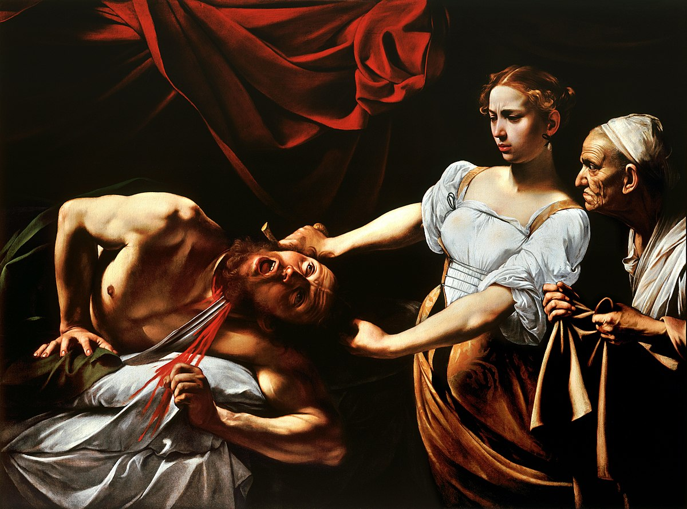
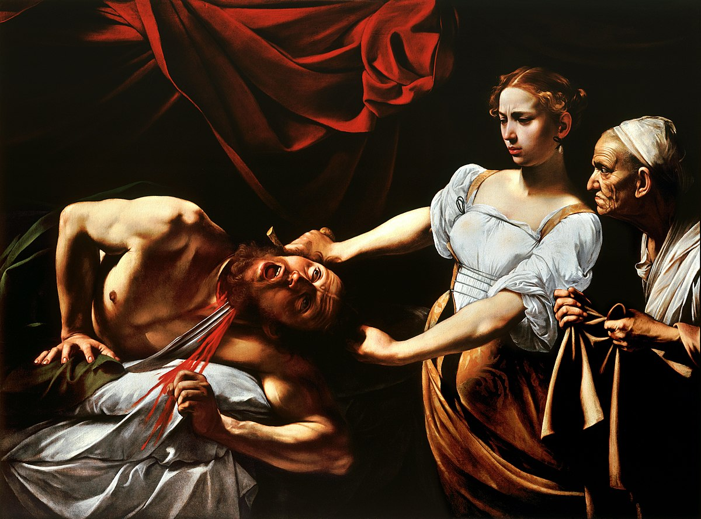

Baroque
Baroque was the dominant style in art and architecture of the seventeenth century, characterized by self-confidence, dynamism and a realistic approach to depiction.
At its height in Rome from around 1630–1680, Baroque is particularly associated with the Catholic Counter-Reformation. Its dynamic movement, bold realism (giving viewers the impression they were witnessing an actual event), and direct emotional appeal were ideally suited to proclaiming the reinvigorated spirit of the Catholic Church. Although originating in Rome, Baroque was influential across Europe. It was also used to depict many non-religious themes and can be seen in portraits, still lifes as well as mythical subjects.
Peter Paul Rubens, Caravaggio, Diego Velázquez, Rembrandt van Rijn and Nicolas Poussin – they were the five greatest painters of the 17th century.
Baroque Paintings

 
